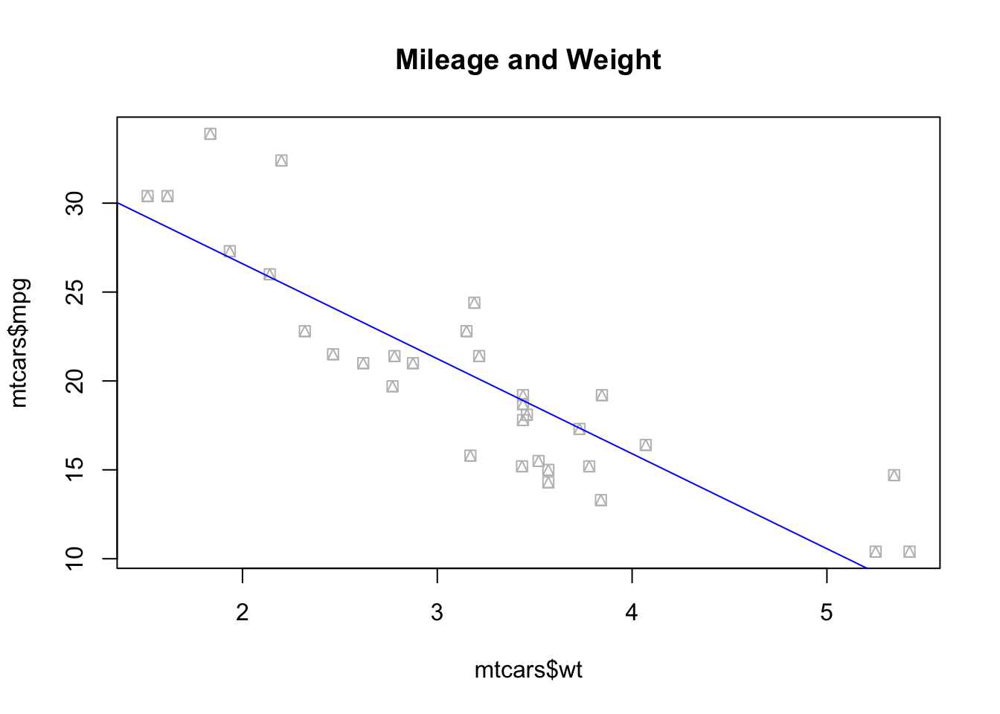
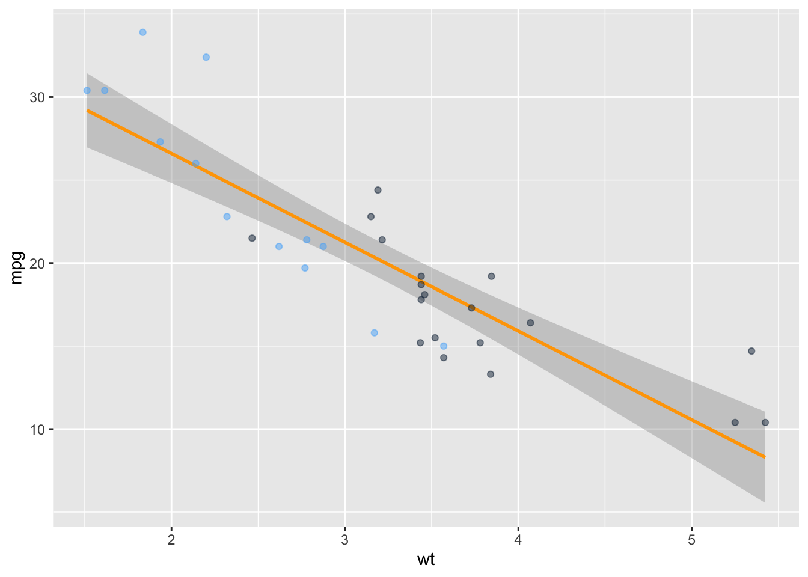
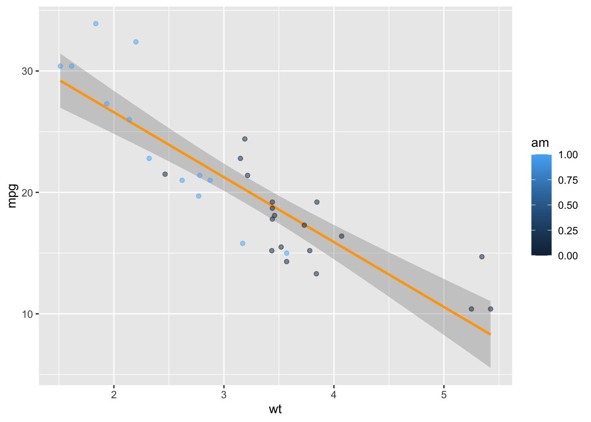
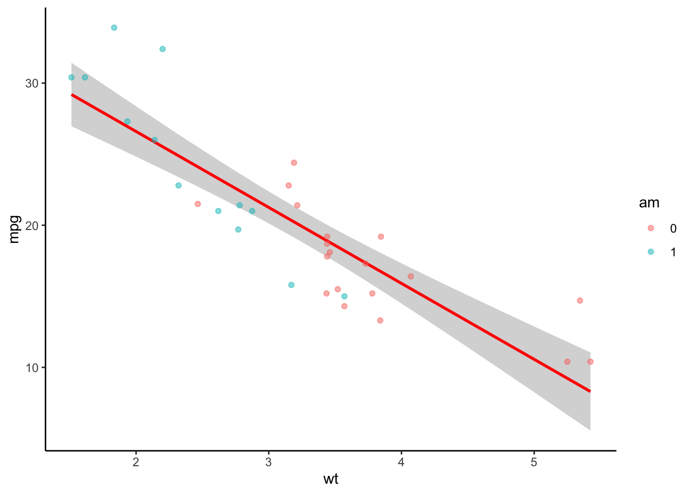
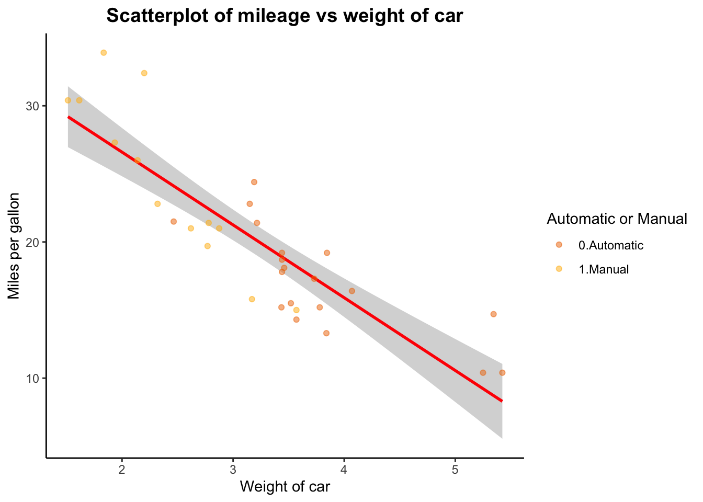
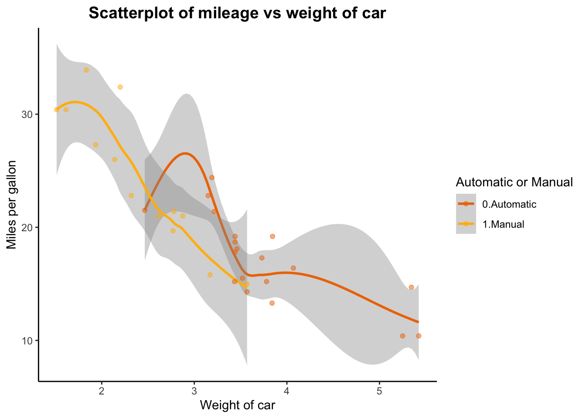

For the purposes of this course, we will be working with the integrated development environment (IDE) Rstudio. Make sure you have downloaded it and have familiarised yourself with the interface before proceeding.
Features of R
R is a statistical programming language. As such, it understands and categorises its input as data types:
(Note that R is not too strict about data types, but you need to be able to identify them to use them in math operations.)
#Character: character_vector <-c("Harry Potter", "Star Wars", "Lord of the Rings")print(character_vector)
[1] "Harry Potter" "Star Wars" "Lord of the Rings"
#Factor: (also knows as categorical variables)factor_vector <-as.factor(c("male","female"))print(factor_vector)
[1] male female
Levels: female male
#Missing: NA
[1] NA
… and data structures. A data structure is either homogeneous (all elements are of the same data type) or heterogeneous (elements can be of more than one data type).
Examples of data structures:
Vectors: think of a row, or a column of the same element.
#Vectors: x <-c(1L,3L,5L,7L,9L) # we call this an integer vectory <-c(1.3, 1, 5, 7, 11.2) # we call this a numerical (or double) vectorprint(x)
[1] 1 3 5 7 9
print(y)
[1] 1.3 1.0 5.0 7.0 11.2
Matrices: they have rows and columns containing elements of the same type.
#Matrices: A <-matrix(1:9, ncol=3, nrow=3, byrow=TRUE)print(A)
[,1] [,2] [,3]
[1,] 1 2 3
[2,] 4 5 6
[3,] 7 8 9
Arrays: A vector is a one-dimensional array. A matrix is a two-dimensional array. In short, an array is a collection of data of the same type.
Data frames: a data frame is a list of column vectors. Each vector must contain the same data type, but the different vectors can store different data types. Note, however, that in a data frame all vectors must have the same length.
Notice that even though vector a in dataframe df is of class integer, vector b is of class character, and vector ^c is of class boolean/logical, when binding them together they have been coerced into factors. You’ll have to manually transform them into their original class to be able to use them in math operations.
From here on, we will write an R script together, and learn some basic commands and tools that will allow you to explore and manipulate data. Please note that this is not an exhaustive tutorial. It is nonetheless a good place to start.
1. Setting up the Rstudio working environment
It is good practice to make sure that the working environment is empty/clean before you start running any code.
# The r base command rm() stands for removerm(list =ls()) # this line indicates R to clear absolutely everything from the environment
Once that has been taken care of, you need to load the libraries you will be working with. While r base has a large number of commands to explore, wrangle, and manipulate data, the open source feature of R means that people all over the world are constantly working on packages and functions to make our lives easier. These can be used by calling the libraries in which they are stored:
# My personal favourite are the Tidyverse library, by Hadley Whickam, and data.table. Both are brilliant for data exploration, manipulation, and visualisation. library(tidyverse)
── Attaching core tidyverse packages ──────────────────────── tidyverse 2.0.0 ──
✔ dplyr 1.1.4 ✔ readr 2.1.5
✔ forcats 1.0.0 ✔ stringr 1.5.1
✔ ggplot2 3.5.1 ✔ tibble 3.2.1
✔ lubridate 1.9.4 ✔ tidyr 1.3.1
✔ purrr 1.0.2
── Conflicts ────────────────────────────────────────── tidyverse_conflicts() ──
✖ dplyr::filter() masks stats::filter()
✖ dplyr::lag() masks stats::lag()
ℹ Use the conflicted package (<http://conflicted.r-lib.org/>) to force all conflicts to become errors
library(data.table)
Attaching package: 'data.table'
The following objects are masked from 'package:lubridate':
hour, isoweek, mday, minute, month, quarter, second, wday, week,
yday, year
The following objects are masked from 'package:dplyr':
between, first, last
The following object is masked from 'package:purrr':
transpose
If you’re working with an imported data set, you should probably set up your working directory as well:
From the working directory, you can call documents: .csv files, .xls and .xlsx, images, .txt, .dta (yes, STATA files!), and more. You’ll need to use the right libraries to do so. For instance: readxl (from the Tidyverse) uses the function read_excel() to import .xlsx and .xls files. If you want to export a data frame in .xlsx format, you can use the package write_xlsx().
2. R base commands for data set exploration
Now that we have all the basic stuff set up, let’s start with some basic r base commands that will allow us to explore our data. To do so, we will work with the toy data set mtcars that can be called from R without the need to upload data or call data from a website.
# some basics to explore your data str(mtcars) # show the structure of the object in a compact format
dim(mtcars) # inspect the dimension of the dataset (returns #rows, #columns)
[1] 32 11
class(mtcars) # evaluate the class of the object (e.g. numeric, factor, character...)
[1] "data.frame"
length(mtcars$mpg) # evaluate the number of elements in vector mpg
[1] 32
mean(mtcars$mpg) # mean of all elements in vector mpg
[1] 20.09062
sum(mtcars$mpg) # sum of all elements in vector mpg (similar to a column sum)
[1] 642.9
sd(mtcars$mpg) # standard deviation
[1] 6.026948
median(mtcars$mpg) # median
[1] 19.2
cor(mtcars$mpg, mtcars$wt) # default is pearson correlation, specify method within function to change it.
[1] -0.8676594
table(mtcars$am) #categorical data in a table: counts
0 1
19 13
prop.table(table(mtcars$am)) #categorical data in a table: proportions
0 1
0.59375 0.40625
3. Objects and assignments
Another important feature of the R programming language is that it is object oriented. For the most part, for every function used, there must be an object assigned! Let’s see an example of object assignment with a bivariate linear regression model:
ols_model <-lm(mpg ~ wt, data = mtcars) # lm stands for linear model. In parenthesis, dependent variable first, independent variable after the squiggly.summary(ols_model)
Call:
lm(formula = mpg ~ wt, data = mtcars)
Residuals:
Min 1Q Median 3Q Max
-4.5432 -2.3647 -0.1252 1.4096 6.8727
Coefficients:
Estimate Std. Error t value Pr(>|t|)
(Intercept) 37.2851 1.8776 19.858 < 2e-16 ***
wt -5.3445 0.5591 -9.559 1.29e-10 ***
---
Signif. codes: 0 '***' 0.001 '**' 0.01 '*' 0.05 '.' 0.1 ' ' 1
Residual standard error: 3.046 on 30 degrees of freedom
Multiple R-squared: 0.7528, Adjusted R-squared: 0.7446
F-statistic: 91.38 on 1 and 30 DF, p-value: 1.294e-10
If you would like to see the results from your regression, you do not need to run it again. Instead, you print the object (ols_model) you have assigned for the linear model function. Similarly, you can call information stored in that object at any time, for example, the estimated coefficients:
ols_model$coefficients
(Intercept) wt
37.285126 -5.344472
If you want to read more about object oriented programming in R, check out Hadley Whickam’s site
4. Plotting with and without special libraries
We had previously loaded a couple of libraries. Why did we do that if we’ve only used r base commands so far? We’re going to exemplify the power of libraries by drawing plots using r base, and ggplot2. Ggplot2 is the plotting function from the Tidyverse, and arguably one of the best data visualisation tools across programming languages. If you’d like to read more about why that is the case, check out the Grammar of Graphics site.
Plotting with R base
plot(mtcars$wt, mtcars$mpg, pch =14, col ="grey", main ="Mileage and Weight")abline(ols_model, col ="blue") # Note that to add a line of best fit, we had to call our previously estimate linear model, stored in the ols_model object-

# with base R, you cannot directly assign an object to a plot, you need to use...p_rbase <-recordPlot()# plot.new() # don't forget to clean up your device afterwards!
Plotting with ggplot2, using the grammar of graphics
# Steps in the Grammar of Graphics# 1: linking plot to dataset, # 2: defining (aes)thetic mapping, # 3: use (geom)etric objects such as points, bars, etc. as markers, # 4: the plot has layersp_ggplot <-ggplot(data = mtcars, aes(x = wt, y = mpg, col=am )) +#the color is defined by car type (automatic 0 or manual 1)geom_smooth(method ="lm", col="orange") +# no need to run a regression ex-ante to add a line of best fit geom_point(alpha=0.5) +#alpha controls transparency of the geom (a.k.a. data point)theme(legend.position="none") #removing legendprint(p_ggplot)
`geom_smooth()` using formula = 'y ~ x'

Thanks to the grammar of graphics, we can continue to edit the plot after we have finished it. Perhaps we’ve come up with ideas to make it more stylish? Or helpful? Let’s see an example:
p_ggplot <- p_ggplot +theme(legend.position ="right") # I am saving it with the same name again, but I could easily choose another name and keep two versions of the plot. print(p_ggplot) # the legend we just added is NOT helpful. Why is that?
`geom_smooth()` using formula = 'y ~ x'

# Remember when we talked about data types?!class(mtcars$am) #for legends, we might prefer levels/categories
[1] "numeric"
mtcars$am <-as.factor(mtcars$am) # we have now transformed the numeric am into a factor variable #the importance of assigning objects :)# Now we can plot our scatterplot without issuesp_ggplot <-ggplot(data = mtcars, aes(x = wt, y = mpg, col = am )) +geom_smooth(method ="lm", col="red") +geom_point(alpha=0.5) +theme(legend.position="right") +theme_classic() print(p_ggplot)
`geom_smooth()` using formula = 'y ~ x'

# Shall we continue?p_ggplot <- p_ggplot +ggtitle("Scatterplot of mileage vs weight of car") +xlab("Weight of car") +ylab("Miles per gallon") +theme(plot.title =element_text(color="black", size=14, face="bold", hjust =0.5))p_ggplot <- p_ggplot +scale_colour_manual(name ="Automatic or Manual", labels =c("0.Automatic", "1.Manual"),values =c("darkorange2", "darkgoldenrod1"))print(p_ggplot)
`geom_smooth()` using formula = 'y ~ x'

# Finally, perhaps we want two lines of best fit that follow the shape of the value dispersion by car type, and not the linear model function?p <-ggplot(data = mtcars, aes(x = wt, y = mpg, col = am )) +geom_smooth() +geom_point(alpha=0.5) +theme(legend.position="right") +theme_classic() +ggtitle("Scatterplot of mileage vs weight of car") +xlab("Weight of car") +ylab("Miles per gallon") +theme(plot.title =element_text(color="black", size=14, face="bold", hjust =0.5)) +scale_colour_manual(name ="Automatic or Manual", labels =c("0.Automatic", "1.Manual"),values =c("darkorange2", "darkgoldenrod1"))print(p)
`geom_smooth()` using method = 'loess' and formula = 'y ~ x'

5. R base capabilities
We’ve had some fun, now let’s go back to some r base basics. These are going to be relevant for making algorithms of your own:
Arithmetic and other operations
2+2#addition
[1] 4
5-2#subtraction
[1] 3
33.3/2#division
[1] 16.65
5^2#exponentiation
[1] 25
200%/%60#integer division [or, how many full hours in 200 minutes?]/aka quotient
[1] 3
200%%60#remainder [or, how many minutes are left over? ]
[1] 20
Logical operators
34<35#smaller than
[1] TRUE
34<35|33#smaller than OR than (returns true if it is smaller than any one of them)
[1] TRUE
34>35&33#bigger than AND than (returns true only if both conditions apply)
[1] FALSE
34!=34#negation
[1] FALSE
34%in%1:100#value matching (is the object contained in the list of items?)
[1] TRUE
`%ni%`<-Negate(`%in%`) #let's create a function for NOT IN1001%ni%1:100# home-made function! :)
[1] TRUE
34==34#evaluation
[1] TRUE
Indexing
The tidyverse comes with a cool Starwars dataframe (or tibble, in the tidyverse language). As long as you have loaded the tidyverse library, you can use it.
head(starwars) # print the first 5 elements of the dataframe/tibble
# A tibble: 6 × 14
name height mass hair_color skin_color eye_color birth_year sex gender
<chr> <int> <dbl> <chr> <chr> <chr> <dbl> <chr> <chr>
1 Luke Sky… 172 77 blond fair blue 19 male mascu…
2 C-3PO 167 75 <NA> gold yellow 112 none mascu…
3 R2-D2 96 32 <NA> white, bl… red 33 none mascu…
4 Darth Va… 202 136 none white yellow 41.9 male mascu…
5 Leia Org… 150 49 brown light brown 19 fema… femin…
6 Owen Lars 178 120 brown, gr… light blue 52 male mascu…
# ℹ 5 more variables: homeworld <chr>, species <chr>, films <list>,
# vehicles <list>, starships <list>
starwars$name[1] #indexing: extract the first element in the "name" vector from the starwars dataframe
[1] "Luke Skywalker"
starwars[1,1] #alternative indexing: extract the element of row 1, col 1
# A tibble: 1 × 1
name
<chr>
1 Luke Skywalker
starwars$name[2:4] # elements 2, 3, 4 of "name" vector
[1] "C-3PO" "R2-D2" "Darth Vader"
starwars[,1] #extract all elements from column 1
# A tibble: 87 × 1
name
<chr>
1 Luke Skywalker
2 C-3PO
3 R2-D2
4 Darth Vader
5 Leia Organa
6 Owen Lars
7 Beru Whitesun Lars
8 R5-D4
9 Biggs Darklighter
10 Obi-Wan Kenobi
# ℹ 77 more rows
starwars[1,] #extract all elements from row 1
# A tibble: 1 × 14
name height mass hair_color skin_color eye_color birth_year sex gender
<chr> <int> <dbl> <chr> <chr> <chr> <dbl> <chr> <chr>
1 Luke Sky… 172 77 blond fair blue 19 male mascu…
# ℹ 5 more variables: homeworld <chr>, species <chr>, films <list>,
# vehicles <list>, starships <list>
starwars$height[starwars$height<150] # returns a logical vector TRUE for elements >150 in height vector
[1] 96 97 66 NA 88 137 112 79 94 122 96 NA NA NA NA NA
# A tibble: 87 × 2
height name
<int> <chr>
1 172 Luke Skywalker
2 167 C-3PO
3 96 R2-D2
4 202 Darth Vader
5 150 Leia Organa
6 178 Owen Lars
7 165 Beru Whitesun Lars
8 97 R5-D4
9 183 Biggs Darklighter
10 182 Obi-Wan Kenobi
# ℹ 77 more rows
We are now reaching the end of this brief introduction to R and Rstudio. We will not go into the fun stuff you can do with data.table, you can find that out on your own if you need to (but know it is a powerful data wrangling package), and instead we will finalise with Reserved Names in R. These are names you cannot use for your objects, because they serve a programming purpose.
6. Reserved names
1. Not-observed data
# 1.1 NaN: results that cannot be reasonably definedh <-0/0is.nan(h)
[1] TRUE
class(h)
[1] "numeric"
print(h)
[1] NaN
# 1.2 NA: missing datacolSums(is.na(starwars)) #How many missings in the starwars tibble*?
name height mass hair_color skin_color eye_color birth_year
0 6 28 5 0 0 44
sex gender homeworld species films vehicles starships
4 4 10 4 0 0 0
mean(starwars$height) # evaluation gives NA? Does that mean that the height vector is empty?!
[1] NA
is.na(starwars$height) # logical vector returns 6 true statements for is.na (coincides with colSums table)
class(starwars$height) # class evaluation returns integer...
[1] "integer"
mean(as.integer(starwars$height), na.rm =TRUE) # read as integer, ignore NAs :) (rm stands for remove)
[1] 174.6049
# missing values (NA) are regarded by R as non comparables, even to themselves, so if you ever encounter a missing values in a vector, make sure tto explicitly tell the function you are using what to do with them.
2. if, else, ifelse, function, for, print, length (etc…)*
These words are reserved for control flow and looping.
# a note on using if else: else should be on the same line as if, otherwise it is not recognised# home-made functionsf1 <-function(x){return(sum(x+1))}print(f1(5)) # returns value of x+1 when x = 5
[1] 6
# for loopsclass(starwars$height) # if it is not integer or numeric, then transform it!
[1] "integer"
starwars$height <-as.numeric(as.character(starwars$height)) # transforming the height vector to numericstarwars$height_judge =NA# if you're using a new object within a for loop, make sure you initialize it before running itfor (i in1:length(starwars$height)) { starwars$height_judge[i] <-ifelse(starwars$height[i]<100, "Short", "Tall")}print(starwars[c("name", "height_judge", "height")])
# A tibble: 87 × 3
name height_judge height
<chr> <chr> <dbl>
1 Luke Skywalker Tall 172
2 C-3PO Tall 167
3 R2-D2 Short 96
4 Darth Vader Tall 202
5 Leia Organa Tall 150
6 Owen Lars Tall 178
7 Beru Whitesun Lars Tall 165
8 R5-D4 Short 97
9 Biggs Darklighter Tall 183
10 Obi-Wan Kenobi Tall 182
# ℹ 77 more rows
You can download the R script by clicking on the button below.